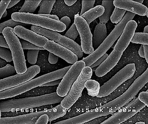

|  | |
Historia de la bacteriología Wikipedia La existencia de microorganismos fue conjeturada a finales de la Edad Media. En el Canon de medicina (1020), Abū Alī ibn Sīnā (Avicena) planteaba que las secreciones corporales estaban contaminadas por multitud de cuerpos extraños infecciosos antes de que una persona cayera enferma, pero no llegó a identificar a estos cuerpos como la primera causa de las enfermedades. Cuando la peste negra (peste bubónica) alcanzó al-Ándalus en el siglo XIV, Ibn Khatima e Ibn al-Jatib escribieron que las enfermedades infecciosas eran causadas por entidades contagiosas que penetraban en el cuerpo humano.1213 Estas ideas sobre el contagio como causa de algunas enfermedades se volvió muy popular durante el Renacimiento, sobre todo a través de los escritos de Girolamo Fracastoro. |
Origen y evolución de las bacterias Wikipedia Los seres vivos se dividen actualmente en tres dominios: bacterias (Bacteria), arqueas (Archaea) y eucariotas (Eukarya). En los dominios Archaea y Bacteria se incluyen los organismos procariotas, esto es, aquellos cuyas células no tienen un núcleo celular diferenciado, mientras que en el dominio Eukarya se incluyen las formas de vida más conocidas y complejas (protistas, animales, hongos y plantas). El término "bacteria" se aplicó tradicionalmente a todos los microorganismos procariotas. Sin embargo, la filogenia molecular ha podido demostrar que los microorganismos procariotas se dividen en dos dominios, originalmente denominados Eubacteria y Archaebacteria, y ahora renombrados como Bacteria y Archaea,30 que evolucionaron independientemente desde un ancestro común. Estos dos dominios, junto con el dominio Eukarya, constituyen la base del sistema de tres dominios, que actualmente es el sistema de clasificación más ampliamente utilizado en bacteriología. |